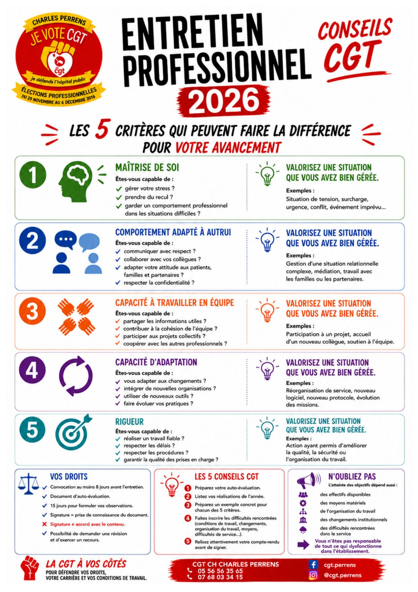
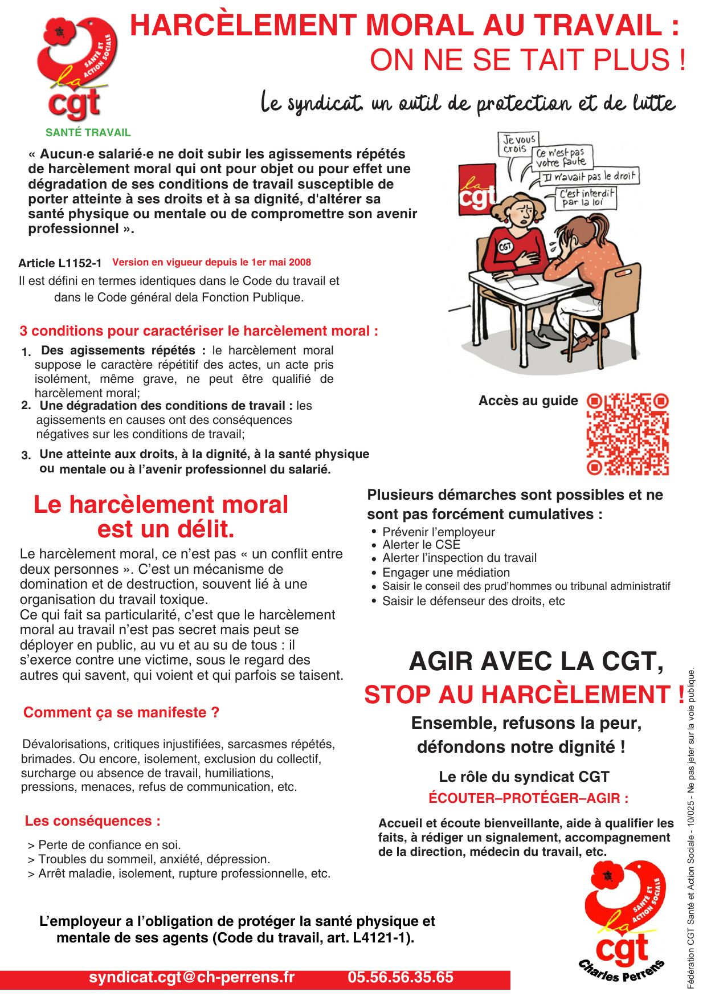
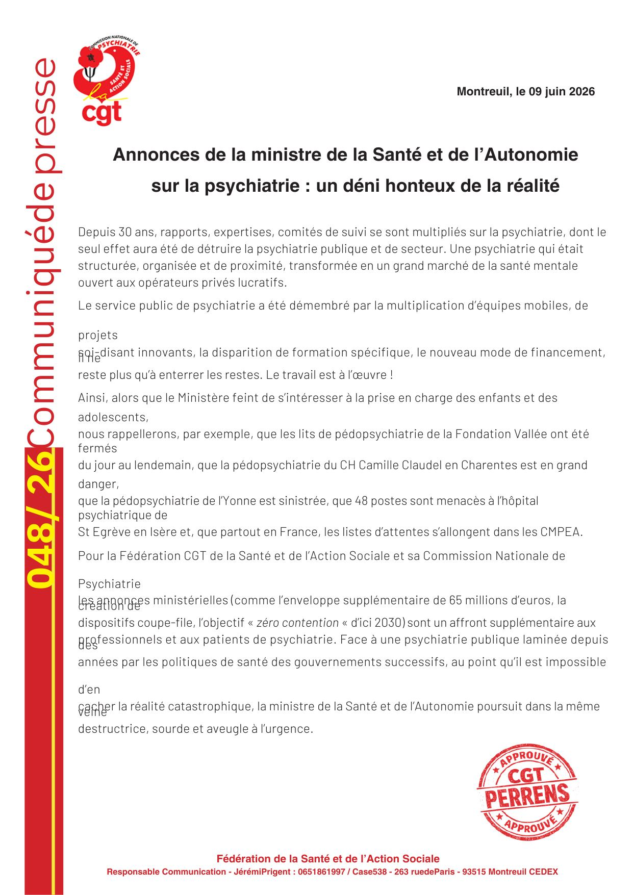
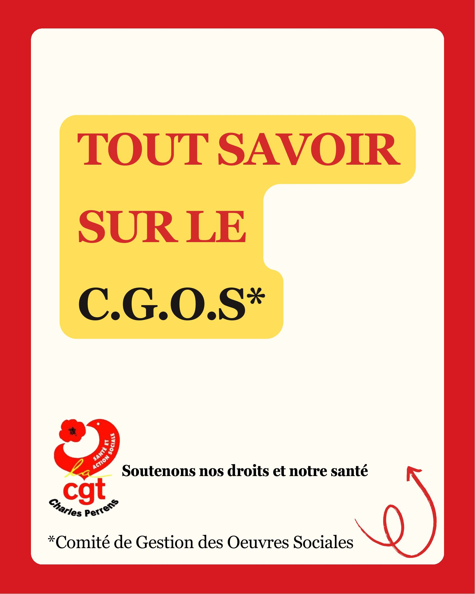
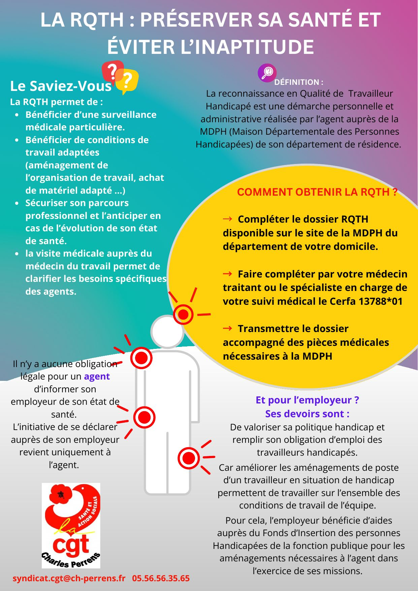
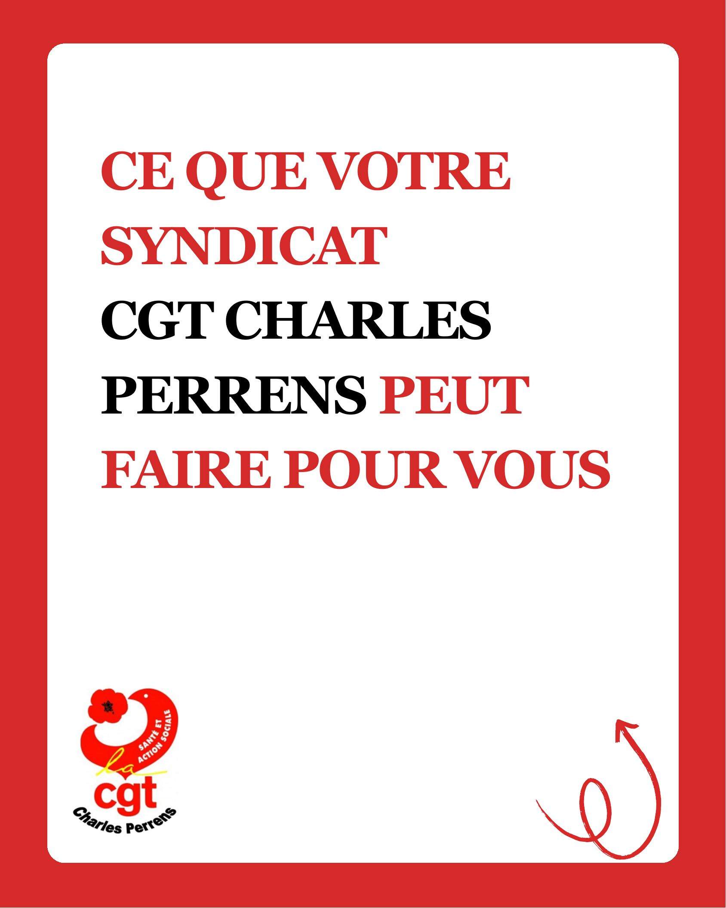

Communiqués, conseils et actualités du syndicat, à lire directement ici.
Bonnes vacances à toutes et tous ! Prenez le temps de souffler : profitez de vos proches, reposez-vous, ressourcez-vous. Vous l'avez bien mérité !
La CGT reste mobilisée : même pendant l'été, nous restons à vos côtés pour défendre vos droits, le service public et de meilleures conditions de travail.
Ensemble, plus forts ! En 2026, faisons entendre notre voix. Votez CGT pour un syndicat déterminé, solidaire et toujours sur le terrain à vos côtés.
La canicule impacte le travail et la santé. La CGT réclame donc des dispositifs exceptionnels pour des circonstances elles-mêmes exceptionnelles — il est de la responsabilité de l'employeur d'agir concrètement. La CGT Charles Perrens demande :
Une prime canicule exceptionnelle sur le modèle de 2003, pour des conditions de travail particulièrement difficiles — une mobilisation des personnels qui doit se traduire par une reconnaissance financière de l'engagement des équipes.
Une autorisation spéciale d'absence et/ou un congé exceptionnel sur le modèle du Covid, pour les personnes vulnérables (grossesse, pathologie chronique, etc.), avec un point systématique fait avec la médecine préventive pour toutes les pathologies pouvant s'aggraver avec la chaleur.
Le télétravail privilégié dès que les missions le permettent, sur le modèle du Covid, pour limiter l'exposition à la chaleur et préserver la santé des agents — avec un point sur les équipements de climatisation.
Une organisation adaptée et anticipée : se caler sur les directives nationales et les alertes de Météo France (vigilance canicule), avec des horaires adaptés, voire décalés, en fonction des besoins des agents et de leurs capacités.

Pour votre avancement, l'entretien évalue 5 critères — pour chacun, valorisez une situation concrète que vous avez bien gérée :
1. Maîtrise de soi : gérer son stress, prendre du recul, garder un comportement professionnel dans les situations difficiles (tension, surcharge, urgence, conflit).
2. Comportement adapté à autrui : communiquer avec respect, collaborer avec ses collègues, adapter son attitude aux patients et familles, respecter la confidentialité.
3. Capacité à travailler en équipe : partager les informations utiles, contribuer à la cohésion, participer aux projets collectifs, coopérer avec les autres professionnels.
4. Capacité d'adaptation : s'adapter aux changements, intégrer de nouvelles organisations, utiliser de nouveaux outils, faire évoluer ses pratiques.
5. Rigueur : réaliser un travail fiable, respecter les délais et les procédures, garantir la qualité des prises en charge.
Vos droits : convocation au moins 8 jours avant l'entretien, document d'auto-évaluation, 15 jours pour formuler vos observations. Signer ne veut pas dire être d'accord avec le contenu — vous pouvez demander une révision et exercer un recours.
Grâce à la mobilisation des professionnels de Charles Perrens, ceux du SECOP comme ceux des unités, et à l'action de la CGT, la Direction a répondu à nos revendications et a pris des engagements écrits le 16 juin 2026.
Ce que nous avons obtenu à ce jour et par écrit :
+1 ETP supplémentaire : passage à 23 ETP jusqu'au 31/12/2026 (22 + 1 ETP en CDD de remplacement à la place des Hublos) ; le +1 ETP sera réévalué au 31/12/2026.
Renfort médical : possibilité d'un 3ᵉ PH en renfort ; recours à l'intérim PH à partir de septembre.
Pratiques harmonisées : élaboration d'un vade-mecum médical recensant toutes les solutions d'aval disponibles pour harmoniser les pratiques et favoriser les alternatives.
Groupe de travail post-urgences : groupe de travail flash dès cette semaine, avec pour objectif la création de lits de post-urgences adultes (unité dédiée à moyen terme).
Information régulière : point mensuel minimum écrit à l'équipe sur les recrutements, avancées et évolutions de la situation.
Autres avancées obtenues : priorisation des formations OMÉGA et crise suicidaire pour tous les nouveaux professionnels du SECOP ; occupation cible du SECOP fixée à 11 lits + 1 CSI + 1 lit exceptionnel = 13 lits maximum ; élargissement des plages horaires du SAS jusqu'à 21h.
Ce qui reste à obtenir : un effectif médical sécurisé et durable (objectif 4 PH), un retour à 24 ETP soignants et une organisation adaptée, une régulation claire et systématique des admissions, la reconnaissance du caractère urgentiste de l'activité du SECOP et les moyens associés.

Alerte depuis le 9 mars. La CGT Charles Perrens dépose un préavis de grève pour le mercredi 17 juin 2026, portant sur des conditions d'accueil dignes, la sécurité des soins, le respect des professionnels, des moyens adaptés, et la fin de la sur-occupation chronique.
Au-delà du SECOP, c'est l'ensemble de l'hôpital public qui est concerné lorsque les moyens ne permettent plus de répondre aux besoins des patients. La CGT Charles Perrens appelle l'ensemble des personnels à soutenir cette mobilisation, et invite également toutes les organisations syndicales partageant ces préoccupations à se joindre à cette démarche.

Depuis 30 ans, rapports, expertises et comités de suivi se sont multipliés sur la psychiatrie, dont le seul effet aura été de détruire la psychiatrie publique et de secteur — transformée en un grand marché de la santé mentale ouvert aux opérateurs privés lucratifs.
Le service public de psychiatrie a été démembré par la multiplication d'équipes mobiles, de projets soi-disant innovants, la disparition de formations spécifiques et un nouveau mode de financement.
Alors que le Ministère feint de s'intéresser à la prise en charge des enfants et des adolescents, la Fédération rappelle que les lits de pédopsychiatrie de la Fondation Vallée ont été fermés du jour au lendemain, que la pédopsychiatrie du CH Camille Claudel est en grand danger, que celle de l'Yonne est sinistrée, que 48 postes sont menacés à St Egrève, et que partout en France les listes d'attente s'allongent dans les CMPEA.
Pour la Fédération, les annonces ministérielles (enveloppe de 65 millions d'euros, dispositifs coupe-file, objectif « zéro contention » d'ici 2030) sont un affront supplémentaire aux professionnels et aux patients de psychiatrie, face à une réalité catastrophique que la ministre continue d'ignorer.
La continuité des soins passe aussi par la continuité de l'encadrement. Post-urgence : une unité sans cap stable. Quand l'encadrement change sans cesse : les priorités changent, les consignes changent, les interlocuteurs changent, les décisions se dispersent — d'où perte de sens, fatigue organisationnelle, sentiment d'abandon et dilution des responsabilités.
Les cadres qui tournent ne sont pas responsables. La continuité managériale est une nécessité pour les équipes, les patients, la qualité des soins, l'organisation du travail et la sécurité des prises en charge.
La CGT Charles Perrens demande : un encadrement stable et identifié, une véritable continuité managériale, du temps pour construire les projets d'équipe, des choix organisationnels cohérents, le respect du travail réel.
Même travail, mêmes responsabilités, mais pas les mêmes droits ! Dans nos services, une réalité inacceptable : des professionnels avec les mêmes diplômes, les mêmes responsabilités, les mêmes contraintes, les mêmes horaires, les mêmes objectifs… mais pas le même salaire, pas les mêmes droits, pas la même reconnaissance — titulaires, stagiaires, CDD, CDI.
Légal ? Oui. Moral ? C'est une autre question. Quand deux professionnels font le même travail mais ne bénéficient pas des mêmes droits parce que la décision dépend de choix de direction, alors la question n'est plus seulement administrative — elle devient éthique. Derrière les statuts, il y a des personnes.
À force de multiplier les contrats précaires, les postes « hybrides » sans reconnaissance, les missions identiques sans égalité réelle, on finit par créer de l'injustice. Conséquences concrètes : démotivation, turnover accru, confiance altérée, banalisation des inégalités.
La CGT demande : une transparence sur les écarts de traitement, une politique de titularisation lisible, la reconnaissance des fonctions exercées, une réflexion éthique sur les validations managériales, l'arrêt des inégalités statutaires.
Le 1er mai ne vient pas d'un calendrier. Il vient des luttes. Il vient du sang. En 1891, lors de la fusillade de Fourmies, des ouvriers sont tombés pour la journée de 8 heures. Ils réclamaient la dignité. On leur a répondu par des balles.
Aujourd'hui encore, on voudrait vider le 1er mai de son sens. On ne touche pas au 1er mai. Il appartient aux travailleurs. Nos droits ne sont pas des cadeaux. Ils ont été arrachés.
Savez-vous que se syndiquer est un droit constitutionnel, quelle que soit votre catégorie professionnelle ? Tout salarié est libre d'adhérer à une organisation syndicale.
Pour information, il n'y a pas d'obligation à en informer son employeur.
Un entretien informel est un échange « spontané » : sans convocation officielle, sans cadre clairement défini. Parler, échanger, faire confiance, c'est sain — mais ce qui se dit sans formalisme peut peser sur votre situation professionnelle et avoir des conséquences réelles : mutation, évaluation, pression sur le poste.
Que pouvez-vous faire ? Vous avez le droit de mettre fin à cet échange : « Je ne souhaite pas poursuivre cet échange dans ce cadre » ou « Pouvez-vous préciser l'objet de cet entretien ? ». Vous pouvez à tout moment demander qu'un échange soit formalisé et être accompagné par la CGT.
Et après ? Ne restez pas seul, contactez la CGT. Notez les éléments de l'échange (date, heure, interlocuteur, circonstances) et envoyez un mail qui résume ce qui a été dit (« Suite à notre discussion de ce jour... ») — ce que vous avez dit sans préparation peut être nuancé, précisé, rectifié par écrit.
Nous avons alerté sur la situation d'un hôpital de jour — on nous a dit qu'on exagérait. Nous avons alerté sur le sous-effectif dans un autre service — même réponse. Dans les deux cas, les faits nous ont donné raison.
La CGT n'utilise pas de « grands moyens » par plaisir ou pour se mettre en avant, mais parce que c'est parfois la seule façon d'être entendue. Notre rôle n'est pas de créer des tensions, mais de porter des réalités que d'autres préfèrent ne pas voir. Et quand nous tirons la sonnette d'alarme, c'est que la situation l'exige — pas pour le spectacle.
Cette lettre adressée le 9 mars 2026 à la Directrice Générale est le dernier cri de désespoir d'une équipe. Après une pétition en ligne, après avoir épuisé les recours internes, la CGT a été mandatée pour porter ce courrier écrit par l'équipe soignante à Mme la Directrice Générale.
La CGT demande qu'une réunion extraordinaire se tienne au SECOP en présence de l'ensemble des personnels et des médecins de l'équipe. L'objectif est de prendre en compte l'ensemble des problématiques et que chacun puisse faire entendre sa voix, en permettant à un maximum de personnel d'y participer. La CGT s'est engagée à accompagner cette situation et souhaite être impliquée lors de cette rencontre et dans les solutions qui y seront travaillées.
Extrait de la lettre de l'équipe du SECOP à la Directrice Générale :
« Le choix d'exercer dans un hôpital public tel que Charles Perrens est un choix conscient directement en lien à l'éthique du soin. […] Mais qu'en est-il du respect de la dignité et de la personne ? Ou de la qualité et de la sécurité des soins ?
En effet, les tensions capacitaires et la saturation du service nous conduisent régulièrement à hospitaliser des patients vulnérables et en souffrance psychique aux SECOP dans des conditions qui interrogent sur leur dignité et leur sécurité : patients installés sur des matelas au sol, dans les salons télés ou dans des espaces non prévus pour l'hospitalisation, parfois à plusieurs dans une même pièce sans accès adapté aux sanitaires comme c'est arrivé le mois dernier.
De manière insidieuse, ces situations de dépassement capacitaire, qui ont commencé il y a 6 mois, sont devenues une normalité et un quotidien, avec des records à 17/15 patients pour 12 lits. Et tout cela malgré l'implication et le professionnalisme des médecins du SECOP, de notre encadrement, ou encore du soutien des renforts médicaux des autres services pour pallier le sous-effectif important actuel au sein des urgences.
Malgré ces renforts, ce travail d'équipe et cette solidarité, les soignants sont aujourd'hui particulièrement éprouvés par la tension constante dans le service. Beaucoup d'entre nous expriment un épuisement important, du stress et une anxiété croissante face aux conditions de travail. De nombreuses fiches d'événements indésirables sont rédigées chaque semaine par les équipes, témoignant de ces difficultés.
Nous aimons notre travail, nous aimons prendre soin de l'autre. Notre intention n'est pas de désigner des responsabilités individuelles mais d'alerter sur une situation globale de tension qui impacte à la fois les patients, les professionnels et la qualité des soins. »
— L'équipe du SECOP
Le 23 janvier 2026, la CGT a lancé une procédure d'alerte. Lors de ce F3SCT exceptionnel, nos représentants CGT ont été symboliquement lynchés, moqués, et l'accès a été refusé à deux d'entre elles le jour J. Notre secrétaire, seule, a subi un déferlement d'attaques personnelles plutôt que d'être écoutée.
Malgré ces disqualifications, elle a poursuivi sa démarche de mise en lumière des situations professionnelles qui mettaient les équipes en danger. Ces comportements se sont reproduits lors du CSE du 29 janvier 2026.
Mais le compte rendu de l'audit nous a donné raison ! Des solutions se mettent en place.
Un problème ? Une question ? En cas d'urgence, brisez la glace. Le local CGT vous accueille du lundi au vendredi de 9h à 17h.
Dans la Fonction Publique Hospitalière, le travail a plusieurs visages : socio-éducatif, administratif, ASH, encadrement, ouvriers, soignants. Chaque métier a ses propres contraintes, sa propre charge, ses propres difficultés — mais un même besoin d'être défendu et représenté.
Quel que soit votre métier, votre statut ou votre service, la CGT est là pour vous accompagner face à un problème ou une question.
Les visuels ci-dessous accompagnent nos fiches pratiques, disponibles en texte complet dans « Vos droits ».



Le projet de ce festival a pris naissance avant la 2nde guerre mondiale, en tant que contre-festival antifasciste, en réponse à la Mostra de Venise, créée par Mussolini. Interrompu par la guerre et le gouvernement refusant de le financer, c'est en tenant face aux obstacles que la toute première édition du festival de Cannes prend place en 1946.
Qui l'a permis ? Philippe Erlanger, chef des services des échanges artistiques aux Affaires Étrangères ; Louis Daquin, réalisateur de la Confédération Générale du Travail ; les ouvriers CGT, bâtisseurs bénévoles du premier Palais de la Croisette ; et le maire communiste de Cannes.
Un engagement permanent : depuis 1946, la Fédération nationale du spectacle CGT siège au comité d'organisation du festival de Cannes. Si l'influence sociale et politique du Festival perdure face aux lois du marché, c'est grâce à cet engagement syndical historique.
Grilles indiciaires détaillées pour toutes les catégories (A, B, C), tous corps et grades de la Fonction Publique Hospitalière, publiées par la Fédération CGT Santé et Action Sociale (édition 2024, valeur du point d'indice à 4,92278 €). Ce document est volumineux (35 pages de tableaux) — il reste disponible en téléchargement plutôt qu'affiché en ligne.
Télécharger le livret →Syndiqué ou non, notre porte vous est toujours ouverte.
cgt@ch-perrens.fr · 05.56.56.35.65 · 07.68.03.34.15 · Facebook.com/CGT.Perrens · @cgt.perrens